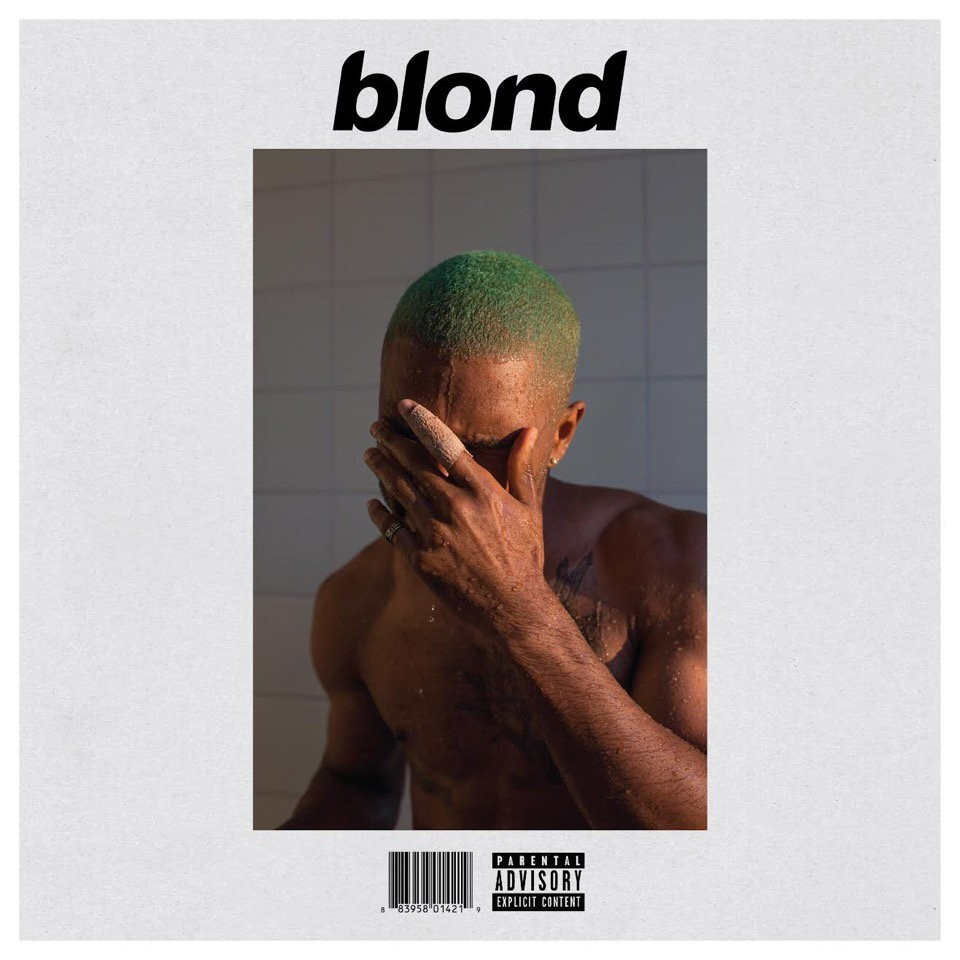

Discography
Frank Ocean has released one mixtape (Nostalgia, Ultra [2011]), two studio albums (Channel Orange [2012], Blonde [2016]), 21 singles (including 5 as a featured artist) and eight music videos. Click for info!

Back to Home